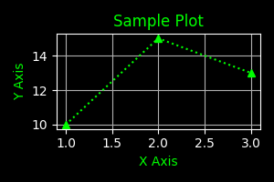

Base64 carries binary data through text-based formats, from 7-bit text systems to modern multimodal API requests.
The Bit Bridge
Encoding Images as Text
An image in a request sent to GPT-5 or Gemini 3 can be encoded as text. One format you may see is a data URL:
data:image/png;base64,iVBORw0KGgoAAAANSUhEUgAA...
This is Base64, a way to encode binary data as text. Encodings of this kind are sometimes called “ASCII Armor.”
The Missing Eighth Bit
The constraint was in particular text transports, not a universal inability of the internet to carry bytes. For example, the original SMTP specification, RFC 821, defined mail data as 7-bit ASCII. Even on an 8-bit channel, it required the high-order bit to be zero.
Seven bits represent \(2^7=128\) values, numbered 0 to 127. An arbitrary 8-bit byte has \(2^8=256\) possible values, so not every binary value fits that text format unchanged. Transport rules also distinguish text content from framing, such as the sequence that ends a mail message.
MIME’s RFC 2045 defines transfer encodings, including Base64, for carrying data through mail systems with these constraints. Encoding does not preserve data by asking the network to discard a bit. It represents the original bytes using an alphabet the transport can carry, then lets the receiver reconstruct those bytes.
What is Base64?
Base64 maps binary data to a limited set of text characters so it can pass through systems that expect text.
Here’s how it works. Take 3 bytes of information, containing 24 individual bits. Split those 24 bits into 4 groups of 6 bits. Map each 6-bit group to one character, using the table below.
Value Range
Binary Range
Characters
0–25
000000–011001
A–Z
26–51
011010–110011
a–z
52–61
110100–111101
0–9
62
111110
+
63
111111
/
This increases the size of the data. For each 3 bytes of information, you will notice that this process created 4 characters. You may ask, well why don’t we just use more characters to the point where we can represent each byte with a single character.
Representing every possible value in a full byte requires \(2^8\) or 256 different values. The point is to choose an alphabet that text-based systems can reliably preserve.
What does Base64 have to do with LLMs and modern AI?
An API, or application programming interface, lets a program send a request to a server and receive a response. Many APIs use JSON to represent that data. Its objects and arrays resemble Python dictionaries and lists, though JSON has its own syntax.
JSON is a text format, with no native binary-file type. An API can accept a Base64 string and decode it back into bytes. This solves a representation problem. It does not make the file safe: Base64 provides no confidentiality, and a service still needs file validation and safe processing. Receiving bytes is not the same as executing them.
Now let’s convert this image into bytes, Armor it with Base64, then convert it back to bytes and view the image!
from IPython.display import Image, display# Load the file as binary ('rb' mode)file_path ='your_image.png'withopen(file_path, "rb") as image_file: raw_bytes = image_file.read()print(f"Total Bytes: {len(raw_bytes)}")binary_preview =' '.join(f'{byte:08b}'for byte in raw_bytes[:4])hex_preview =' '.join(f'{byte:02x}'for byte in raw_bytes[:4])print(f"First 4 Bytes (binary): {binary_preview}")print(f"First 4 Bytes (hex): {hex_preview}")
Total Bytes: 7940
First 4 Bytes (binary): 10001001 01010000 01001110 01000111
First 4 Bytes (hex): 89 50 4e 47
import base64print("Encoding data to Base64: \n")encoded_bytes = base64.b64encode(raw_bytes).decode('utf-8')print(f"Base64 Data should be ~33% larger than original data.")pct_diff = (len(encoded_bytes) -len(raw_bytes)) /len(raw_bytes) *100print(f"Base64 Encoded Length: {len(encoded_bytes)}, {pct_diff:.2f}% greater than original.")print(f"Base64 Encoded Preview: {encoded_bytes[:20]}...\n")print("Sending Base64 encoded data to API...")print("Receiving Base64 encoded data from API...\n")decoded_bytes = base64.b64decode(encoded_bytes)print(f"Decoded Bytes Length: {len(decoded_bytes)}")print("Displaying Decoded Image:")display(Image(data=decoded_bytes))
Encoding data to Base64:
Base64 Data should be ~33% larger than original data.
Base64 Encoded Length: 10588, 33.35% greater than original.
Base64 Encoded Preview: iVBORw0KGgoAAAANSUhE...
Sending Base64 encoded data to API...
Receiving Base64 encoded data from API...
Decoded Bytes Length: 7940
Displaying Decoded Image:

Personally I love remembering that whenever I am using an LLM with multimodal and tool-use capabilities, a text-encoding technique from older communication systems is still doing useful work.